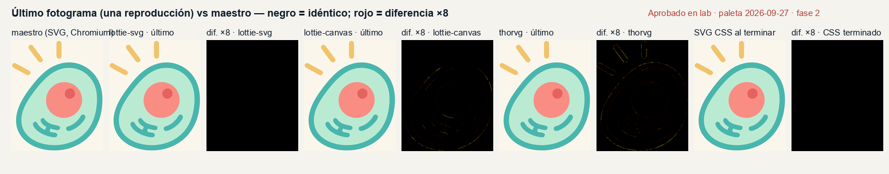
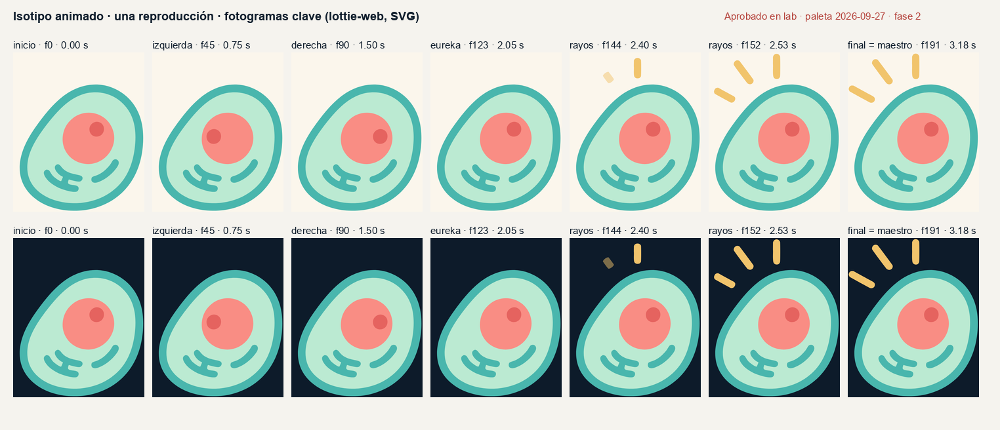
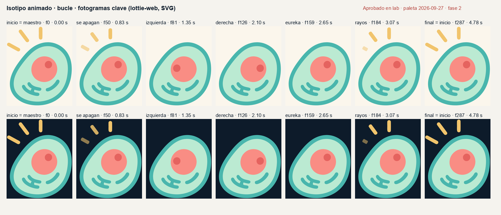
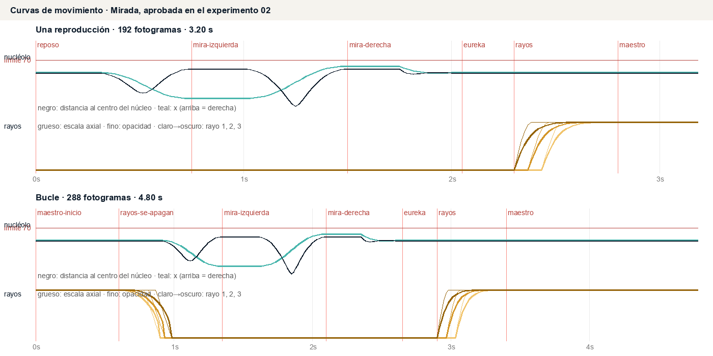
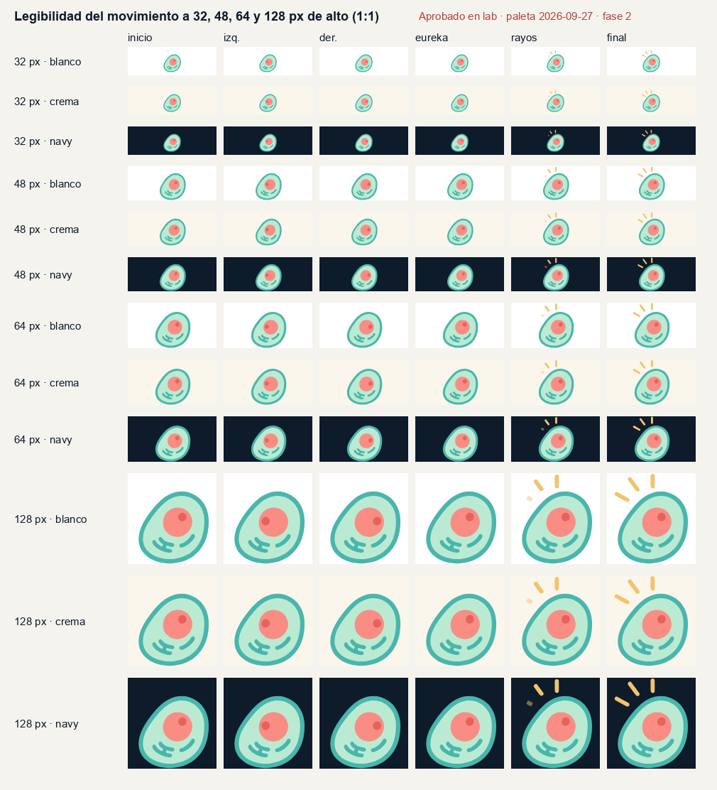
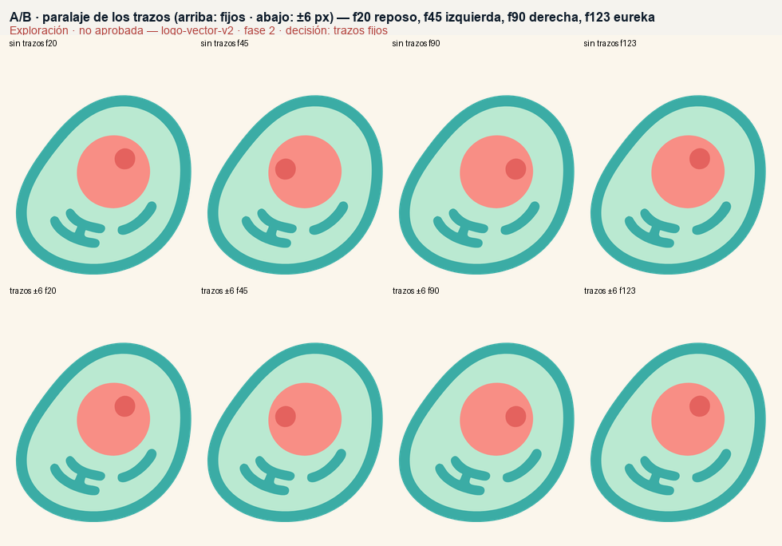

Céluma · Laboratorio visual · experimento 02 · fase 2
Isotipo animado
La célula mira a la izquierda y a la derecha (solo se desplaza el nucléolo), hace una pausa de «eureka», aparecen los tres rayos como luz y termina en el maestro SVG activo exacto, con la paleta aprobada el 2026-09-27. Membrana, citoplasma, núcleo y trazos no se mueven. El entregable es el isotipo: el wordmark A quedó elegido después; esta pieza no anima ningún lockup.
Reproductor
Guion y tiempos (60 fps)
Fase: —
Tamaños de uso (sincronizados)
Siguen el fotograma del reproductor principal con lottie-web (SVG).
Último fotograma vs maestro, en este navegador
El último fotograma de la versión elegida lo dibuja lottie-web y se compara píxel a píxel con el maestro (anim/celuma-isotipo-maestro-caja-anim.svg), ambos rasterizados aquí mismo a 557 × 678. El mapa marca en rojo cualquier diferencia, ampliada ×8.

Vídeo de vista previa (para revisar el ritmo)
Una reproducción ×2 y bucle ×2 sobre crema, navy y blanco, a 60 fps. Se renderizó fotograma a fotograma con lottie-web, así que el tiempo es exacto. El vídeo es para revisar; no es el formato de entrega del logo.
Fotogramas clave y curvas





Validación
Cifras de validation/anim-metrics.json. Reproductores probados en Chromium headless (Playwright): lottie-web 5.13.0 (SVG y canvas) y ThorVG (dotlottie-web 0.80.0). No se probaron lottie-ios, lottie-android, Safari ni Firefox.
| Comparación | Tolerancia | Resultado | IoU silueta | Píxeles idénticos | |Δα| > 2 fuera del antialias | ΔE00 máx. en planos |
|---|
Archivos e integración
Entregables de Mirada
- anim/celuma-isotipo-once.json: Lottie, una reproducción
- anim/celuma-isotipo-loop.json: Lottie, bucle sin salto
- anim/celuma-isotipo-once.svg y …-loop.svg: SVG + CSS (opción ligera)
- anim/celuma-isotipo-maestro-caja-anim.svg: maestro estático en la misma caja, para movimiento reducido y como respaldo
- anim/preview/…mp4 y …webm: vista previa
- README-FASE2.md: tiempos, decisiones, compatibilidad y validación


Movimiento reducido: cómo integrarla
SVG como <img>: Chromium no aplica prefers-reduced-motion dentro de una imagen SVG (verificado). Usa un <picture> con el maestro estático como fuente para ese caso:
<picture>
<source srcset="celuma-isotipo-maestro-caja-anim.svg"
media="(prefers-reduced-motion: reduce)">
<img src="celuma-isotipo-once.svg" alt="Céluma">
</picture>
SVG en línea: su propia regla @media (prefers-reduced-motion: reduce) desactiva la animación (verificado). Lottie: la integración consulta la preferencia y, si es «reduce», muestra el último fotograma (goToAndStop(op − 1, true)) o el SVG estático, como hace esta página.